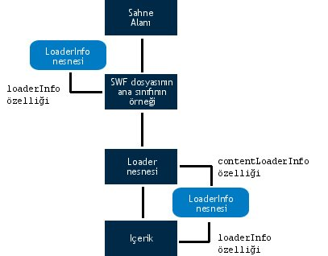

| Paket | flash.display |
| Sınıf | public class LoaderInfo |
| Miras Alma | LoaderInfo |
| Dil Sürümü: | ActionScript 3.0 |
| Çalışma Zamanı Sürümleri: | AIR 1.0, Flash Player 9, Flash Lite 4 |
LoaderInfo nesnelerine iki şekilde erişebilirsiniz:
- Bir flash.display.Loader nesnesinin
contentLoaderInfoözelliği—contentLoaderInfoözelliği her zaman Loader nesneleri için kullanılabilir.load()veyaloadBytes()yöntemini çağırmayan ya da yeterince yüklenmemiş bir Loader nesnesi içincontentLoaderInfoözelliğinin birçok özelliğine erişme girişimi bir hata atar. - Bir görüntüleme nesnesinin
loaderInfoözelliği.
Bir Loader nesnesinin contentLoaderInfo özelliği, Loader nesnesinin yüklemekte olduğu içerik hakkında bilgi sağlarken, bir DisplayObject öğesinin loaderInfo özelliği, o görüntüleme nesnesinin kök SWF dosyası hakkında bilgi sağlar.
Bir görüntüleme nesnesini (SWF dosyası veya bitmap gibi) yüklemek için bir Loader nesnesi kullanıyorsanız, görüntüleme nesnesinin loaderInfo özelliği, Loader nesnesinin (DisplayObject.loaderInfo = Loader.contentLoaderInfo) contentLoaderInfo özelliği ile aynıdır. SWF dosyasının ana sınıf örneği herhangi bir Loader nesnesi içermediğinden, SWF dosyasının ana sınıf örneği için LoaderInfo öğesine erişmenin tek yolu, loaderInfo özelliğidir.
Şu şema, SWF dosyasının ana sınıf örneği için, bir Loader nesnesinin contentLoaderInfo özelliği için ve yüklenen nesnenin loaderInfo özelliği için LoaderInfo nesnesinin farklı kullanımlarını gösterir:

Yükleme işlemi tamamlanmadığında, bir Loader nesnesinin contentLoaderInfo özelliğinin bazı özellikleri kullanılamaz. bytesLoaded, bytesTotal, url, loaderURL ve applicationDomain gibi bazı özellikleri alamazsınız. loaderInfo nesnesi init olayını gönderdiğinde, loaderInfo nesnesinin ve yüklenen görüntünün ya da SWF dosyasının tüm özelliklerine erişebilirsiniz.
Not: LoaderInfo nesnelerinin tüm özellikleri salt okunurdur.
EventDispatcher.dispatchEvent() yöntemi, LoaderInfo nesneleri için geçerli değildir. Bir LoaderInfo nesnesinde dispatchEvent() çağırırsanız bir IllegalOperationError istisnası atılır.
İlgili API Öğeleri
flash.display.Loader.content
flash.display.DisplayObject
flash.display.DisplayObject.loaderInfo
 Miras Alınan Genel Özellikleri Gizle
Miras Alınan Genel Özellikleri Gizle Miras Alınan Genel Özellikleri Göster
Miras Alınan Genel Özellikleri Göster| Özellik | Tanımlayan: | ||
|---|---|---|---|
| actionScriptVersion : uint [salt okunur]
Yüklenen SWF dosyasının ActionScript sürümü. | LoaderInfo | ||
| applicationDomain : ApplicationDomain [salt okunur]
Harici bir SWF dosyası yüklendiğinde, yüklenen sınıfın içindeki tüm ActionScript 3.0 tanımları applicationDomain özelliğinin içinde saklanır. | LoaderInfo | ||
| bytes : ByteArray [salt okunur]
Bir LoaderInfo nesnesiyle ilişkilendirilmiş baytlar. | LoaderInfo | ||
| bytesLoaded : uint [salt okunur]
Medya için yüklenen bayt sayısı. | LoaderInfo | ||
| bytesTotal : uint [salt okunur]
Medya dosyasının tamamındaki sıkıştırılmış bayt sayısı. | LoaderInfo | ||
| childAllowsParent : Boolean [salt okunur]
İçerikten (alt öğe) Loader'a (üst öğe) güven ilişkisini ifade eder. | LoaderInfo | ||
| childSandboxBridge : Object
Loader nesnesinin sanal alanındaki kodla erişilebilecek özellikler ve yöntemleri göstermek için yüklenen içeriğin koduyla ayarlanabilen bir nesne. | LoaderInfo | ||
 | constructor : Object
Belirli bir nesne örneği için sınıf nesnesine veya yapıcı işlevine bir başvuru. | Object | |
| content : DisplayObject [salt okunur]
Bu LoaderInfo nesnesiyle ilişkilendirilen yüklü nesne. | LoaderInfo | ||
| contentType : String [salt okunur]
Yüklenen dosyanın MIME türü. | LoaderInfo | ||
| frameRate : Number [salt okunur]
Yüklenen SWF dosyasının saniyede kare sayısı olarak nominal kare hızı. | LoaderInfo | ||
| height : int [salt okunur]
Yüklenen dosyanın nominal yüksekliği. | LoaderInfo | ||
| isURLInaccessible : Boolean [salt okunur]
LoaderInfo.url özelliğinin kırpıldığını gösterir. | LoaderInfo | ||
| loader : Loader [salt okunur]
Bu LoaderInfo nesnesiyle ilişkilendirilen Loader nesnesi. | LoaderInfo | ||
| loaderURL : String [salt okunur]
Bu LoaderInfo nesnesi tarafından açıklanan medyanın yüklemesini başlatan SWF dosyasının URL'si. | LoaderInfo | ||
| parameters : Object [salt okunur]
Yüklenen SWF dosyasında sağlanan parametreleri temsil eden ad-değer çiftlerini içeren bir nesne. | LoaderInfo | ||
| parentAllowsChild : Boolean [salt okunur]
Loader'dan (üst öğe) içeriğe (alt öğe) güven ilişkisini ifade eder. | LoaderInfo | ||
| parentSandboxBridge : Object
Yüklenen içeriğin koduyla erişilebilecek özellikler ve yöntemleri göstermek için Loader nesnesinin sanal alanındaki kod tarafından ayarlanabilen bir nesne. | LoaderInfo | ||
| sameDomain : Boolean [salt okunur]
Yükleyici ve içerik arasındaki etki alanı ilişkisini ifade eder: aynı etki alanından geliyorlarsa true, aksi halde false döner. | LoaderInfo | ||
| sharedEvents : EventDispatcher [salt okunur]
Güvenlik sınırları ötesinde olay alışverişi yapmak için kullanılacak bir EventDispatcher örneği. | LoaderInfo | ||
| swfVersion : uint [salt okunur]
Yüklenen SWF dosyasının dosya biçimi sürümü. | LoaderInfo | ||
| uncaughtErrorEvents : UncaughtErrorEvents [salt okunur]
Bu LoaderInfo nesnesinin SWF dosyasındaki kodda bir işlenmemiş hata oluştuğunda bir uncaughtError olayı gönderen nesne. | LoaderInfo | ||
| url : String [salt okunur]
Yüklenmekte olan medyanın URL'si. | LoaderInfo | ||
| width : int [salt okunur]
Yüklenen içeriğin nominal genişliği. | LoaderInfo | ||
| Yöntem | Tanımlayan: | ||
|---|---|---|---|
| addEventListener(type:String, listener:Function, useCapture:Boolean = false, priority:int = 0, useWeakReference:Boolean = false):void
EventDispatcher nesnesi olan bir olay dinleyici nesnesini, dinleyicinin bir olayın bildirimini alması için kaydeder. | EventDispatcher | |
[statik]
Nesne olarak tanımlanan bir SWF dosyasıyla ilişkilendirilmiş LoaderInfo nesnesini döndürür. | LoaderInfo | ||
|
EventDispatcher nesnesinin belirli bir olay türü için kayıtlı dinleyicisi olup olmadığını kontrol eder. | EventDispatcher | |
|
Bir nesnenin belirli bir özelliğinin tanımlı olup olmadığını gösterir. | Object | |
|
Object sınıfının bir örneğinin parametre olarak belirtilen nesnenin prototip zincirinde olup olmadığını gösterir. | Object | |
|
Belirtilen özelliğin bulunup bulunmadığını ve numaralandırılabilir olup olmadığını gösterir. | Object | |
|
EventDispatcher nesnesinden bir dinleyiciyi kaldırır. | EventDispatcher | |
|
Dinamik bir özelliğin döngü işlemlerinde kullanılabilirliğini ayarlar. | Object | |
|
Bu nesnenin, yerel ayara özel kurallara göre biçimlendirilmiş dize temsilini döndürür. | Object | |
|
Belirtilen nesnenin dize olarak temsil edilen halini döndürür. | Object | |
|
Belirtilen nesnenin temel değerini döndürür. | Object | |
|
Bir olay dinleyicisinin bu EventDispatcher nesnesiyle mi, yoksa onun belirtilen olay türüne yönelik üst öğelerinden biriyle mi kayıtlı olduğunu kontrol eder. | EventDispatcher | |
| Olay | Özet | Tanımlayan: | ||
|---|---|---|---|---|
| [broadcast olayı] Flash Player veya AIR uygulaması işletim sistemi odağına gelip etkin olduğunda gönderilir. | EventDispatcher | ||
| Veriler başarılı şekilde yüklendiğinde gönderilir. | LoaderInfo | |||
| [broadcast olayı] Çalışan Flash Player veya AIR uygulaması sistem odağını kaybettiğinde ve etkin olmayan duruma geldiğinde gönderilir. | EventDispatcher | ||
| HTTP üzerinden bir ağ isteği yapıldığında ve bir HTTP durum kodu algılandığında gönderilir. | LoaderInfo | |||
| Yüklenen bir SWF dosyasının özellikleri ve yöntemleri erişilebilir ve kullanıma hazır durumdaysa gönderilir. | LoaderInfo | |||
| Bir yükleme işleminin başarısız olmasına neden olan bir girdi veya çıktı hatası ortaya çıktığında gönderilir. | LoaderInfo | |||
| Bir yükleme işlemi başladığında gönderilir. | LoaderInfo | |||
| İndirme işlemi ilerlerken veri alındığında gönderilir. | LoaderInfo | |||
| Yüklenen bir nesne, Loader nesnesinin unload() yöntemi kullanılarak her kaldırıldığında veya aynı Loader nesnesi tarafından ikinci bir yükleme gerçekleştirilip yükleme başlamadan önce orijinal içerik kaldırıldığında bir LoaderInfo nesnesi tarafından gönderilir. | LoaderInfo | |||
actionScriptVersion | özellik |
actionScriptVersion:uint [salt okunur] | Dil Sürümü: | ActionScript 3.0 |
| Çalışma Zamanı Sürümleri: | AIR 1.0, Flash Player 9, Flash Lite 4 |
Yüklenen SWF dosyasının ActionScript sürümü. Dil sürümü, ActionScriptVersion sınıfı kullanılarak belirtilir, örn. ActionScriptVersion.ACTIONSCRIPT2 ve ActionScriptVersion.ACTIONSCRIPT3.
Not: Bu özellik her zaman ActionScriptVersion.ACTIONSCRIPT2 veya ActionScriptVersion.ACTIONSCRIPT3 değerine sahiptir. ActionScript 1.0 ve 2.0, ActionScriptVersion.ACTIONSCRIPT2 (sürüm 2.0) olarak bildirilir. Bu özellik yalnızca ActionScript 1.0 ve 2.0'ı ActionScript 3.0'dan ayırır.
Uygulama
public function get actionScriptVersion():uintAtar
Error — Dosya, istenen bilgileri almak için yeterince indirilmezse.
| |
Error — Dosya bir SWF dosyası değilse.
|
İlgili API Öğeleri
applicationDomain | özellik |
applicationDomain:ApplicationDomain [salt okunur] | Dil Sürümü: | ActionScript 3.0 |
| Çalışma Zamanı Sürümleri: | AIR 1.0, Flash Player 9, Flash Lite 4 |
Harici bir SWF dosyası yüklendiğinde, yüklenen sınıfın içindeki tüm ActionScript 3.0 tanımları applicationDomain özelliğinin içinde saklanır.
Bir SWF dosyasındaki tüm kodlar, bir uygulama etki alanında var olacak şekilde tanımlanmıştır. Geçerli uygulama etki alanı, ana uygulamanızın çalıştığı yerdir. Sistem etki alanları, geçerli etki alanı ve Flash Player veya Adobe AIR tarafından kullanılan tüm sınıflar da dahil olmak üzere, tüm uygulama etki alanlarını içerir.
Sistem etki alanı dışındaki tüm uygulama etki alanları, ilişkilendirilmiş bir üst etki alanına sahiptir. Ana uygulamanızın applicationDomain öğesinin üst etki alanı, sistem etki alanıdır. Yüklenmiş sınıflar yalnızca üst öğeleri tarafından zaten tanımlanmamışsa tanımlanır. Yüklenmiş bir sınıf tanımını, yeni bir tanımla geçersiz kılamazsınız.
Uygulama etki alanlarının kullanım örnekleri için ActionScript 3.0 Geliştirici Kılavuzu'ndaki "Client System Environment" (İstemci Sistem Ortamı) bölümüne bakın.
Uygulama
public function get applicationDomain():ApplicationDomainAtar
SecurityError — Çağıranın bu güvenlik sanal alanının bu ApplicationDomain öğesine erişmesine izin verilmez.
|
İlgili API Öğeleri
bytes | özellik |
bytes:ByteArray [salt okunur] | Dil Sürümü: | ActionScript 3.0 |
| Çalışma Zamanı Sürümleri: | AIR 1.0, Flash Player 9.0.115.0, Flash Lite 4 |
Bir LoaderInfo nesnesiyle ilişkilendirilmiş baytlar.
Uygulama
public function get bytes():ByteArrayAtar
SecurityError — Bu API'ye erişen nesnenin güvenlik kısıtlamaları nedeniyle yüklü nesneye erişmesi önlenirse. Örneğin bir Loader nesnesi contentLoaderInfo.content özelliğine erişme girişiminde bulunduğunda ve yüklü içeriğe erişmek için buna güvenlik izni verilmediğinde bu durum oluşabilir.
Güvenlikle ilgili daha fazla bilgi için, bkz. Flash Player Geliştirici Merkezi Konusu: Güvenlik. |
bytesLoaded | özellik |
bytesTotal | özellik |
bytesTotal:uint [salt okunur] | Dil Sürümü: | ActionScript 3.0 |
| Çalışma Zamanı Sürümleri: | AIR 1.0, Flash Player 9, Flash Lite 4 |
Medya dosyasının tamamındaki sıkıştırılmış bayt sayısı.
Bu LoaderInfo nesnesinin karşılık gelen Loader nesnesi tarafından birinci progress olayı gönderilmeden önce, bytesTotal değeri 0'dır. Loader nesnesindeki birinci progress olayından sonra, bytesTotal öğesi, indirilecek gerçek bayt sayısını yansıtır.
Not (yalnızca iOS): iOS'ta bir uygulama çalıştırılırken, döndürülen değer diğer platformlardakiyle aynı değildir.
Uygulama
public function get bytesTotal():uintİlgili API Öğeleri
childAllowsParent | özellik |
childAllowsParent:Boolean [salt okunur] | Dil Sürümü: | ActionScript 3.0 |
| Çalışma Zamanı Sürümleri: | AIR 1.0, Flash Player 9, Flash Lite 4 |
İçerikten (alt öğe) Loader'a (üst öğe) güven ilişkisini ifade eder. Alt öğe, üst öğe erişimine izin verirse true; aksi takdirde, false. Alt nesne, üst etki alanına izin vermek için allowDomain() yöntemini çağırdıysa veya üst etki alanına izin veren alt etki alanına, bir URL ilkesi yüklenirse, bu özellik true değerine ayarlanır. Alt öğe ve üst öğe aynı etki alanındaysa, bu özellik true değerine ayarlanır.
Güvenlikle ilgili daha fazla bilgi için, bkz. Flash Player Geliştirici Merkezi Konusu: Güvenlik.
Uygulama
public function get childAllowsParent():BooleanAtar
Error — Dosya, istenen bilgileri almak için yeterince indirilmezse atılır.
|
childSandboxBridge | özellik |
childSandboxBridge:Object| Çalışma Zamanı Sürümleri: | AIR 1.0, Flash Player 11.4, Flash Lite 4 |
Loader nesnesinin sanal alanındaki kodla erişilebilecek özellikler ve yöntemleri göstermek için yüklenen içeriğin koduyla ayarlanabilen bir nesne. Bu sandbox bridge, uygulama dışı bir sanal alandaki içeriğin uygulama sanal alanındaki komut dosyalarına denetimli erişime sahip olmasını, ve bunun tam tersini sağlar. Sanal alan köprüsü, uygulama ve uygulama dışı güvenlik sanal alanları arasında açık etkileşim sağlayarak sanal alanlar arasında bir ağ geçidi olarak görev yapar.
Uygulama
public function get childSandboxBridge():Object public function set childSandboxBridge(value:Object):voidAtar
SecurityError — Yalnızca yüklenen içeriğin sanal alanındaki içerik bu özelliği ayarlayabilir.
|
İlgili API Öğeleri
content | özellik |
content:DisplayObject [salt okunur] | Dil Sürümü: | ActionScript 3.0 |
| Çalışma Zamanı Sürümleri: | AIR 1.0, Flash Player 9, Flash Lite 4 |
Bu LoaderInfo nesnesiyle ilişkilendirilen yüklü nesne.
Uygulama
public function get content():DisplayObjectAtar
SecurityError — Bu API'ye erişen nesnenin güvenlik kısıtlamaları nedeniyle yüklü nesneye erişmesi önlenirse. Örneğin bir Loader nesnesi contentLoaderInfo.content özelliğine erişme girişiminde bulunduğunda ve yüklü içeriğe erişmek için buna güvenlik izni verilmediğinde bu durum oluşabilir.
Güvenlikle ilgili daha fazla bilgi için, bkz. Flash Player Geliştirici Merkezi Konusu: Güvenlik. |
contentType | özellik |
contentType:String [salt okunur] | Dil Sürümü: | ActionScript 3.0 |
| Çalışma Zamanı Sürümleri: | AIR 1.0, Flash Player 9, Flash Lite 4 |
Yüklenen dosyanın MIME türü. Dosyanın türünü belirlemeye yetecek kadar olan kısmı yüklenmediyse, değer null olur. Şu listede olası değerler verilmektedir:
"application/x-shockwave-flash""image/jpeg""image/gif""image/png"
Uygulama
public function get contentType():StringframeRate | özellik |
frameRate:Number [salt okunur] | Dil Sürümü: | ActionScript 3.0 |
| Çalışma Zamanı Sürümleri: | AIR 1.0, Flash Player 9, Flash Lite 4 |
Yüklenen SWF dosyasının saniyede kare sayısı olarak nominal kare hızı. Bu sayı genellikle bir tam sayı olsa da her zaman tam sayı olmak zorunda değildir.
Bu değer, kullanılan gerçek kare hızından farklı olabilir. Flash Player veya Adobe AIR, herhangi bir zamanda yüklenen tüm SWF dosyaları için tek bir kare hızı kullanır ve bu kare hızı ana SWF dosyasının nominal kare hızı tarafından belirlenir. Ayrıca, ana kare hızı donanıma, ses senkronizasyonuna ve diğer faktörlere bağlı olarak arşivlenemeyebilir.
Uygulama
public function get frameRate():NumberAtar
Error — Dosya, istenen bilgileri almak için yeterince indirilmezse.
| |
Error — Dosya bir SWF dosyası değilse.
|
height | özellik |
height:int [salt okunur] | Dil Sürümü: | ActionScript 3.0 |
| Çalışma Zamanı Sürümleri: | AIR 1.0, Flash Player 9, Flash Lite 4 |
Yüklenen dosyanın nominal yüksekliği. Yüklenen içerik veya bunun üst görüntüleme nesneleri ölçeklenebileceğinden, bu değer içeriğin görüntülendiği gerçek yükseklikten farklı olabilir.
Uygulama
public function get height():intAtar
Error — Dosya, istenen bilgileri almak için yeterince indirilmezse.
|
isURLInaccessible | özellik |
isURLInaccessible:Boolean [salt okunur] | Dil Sürümü: | ActionScript 3.0 |
| Çalışma Zamanı Sürümleri: | Flash Player 10.1, AIR 2 |
LoaderInfo.url özelliğinin kırpıldığını gösterir. isURLInaccessible değeri true olduğunda, LoaderInfo.url değeri yalnızca içeriğin yüklendiği son URL'nin etki alanı olur. Örneğin; içerik, http://www.adobe.com/assets/hello.swf adresinden yüklenmişse ve LoaderInfo.url özeliği http://www.adobe.com değerine sahipse özellik kırpılır. isURLInaccessible değeri yalnızca aşağıdakilerin tümü true olduğunda true olur:
- İçeriği yüklerken bir HTTP yeniden yönlendirmesi oluştu.
Loader.load()öğesini çağıran SWF dosyası içeriğin son URL'sinden farklı bir etki alanından.Loader.loadöğesini çağıran SWF dosyasının içeriğe erişim izni yok. İçeriğe verilen izin,BitmapData.draw(): çağrısıSecurity.allowDomain()öğesinin SWF dosyasına erişim izni ile aynı biçimde verilir. (veya SWF olmayan dosya içeriği, bir ilke dosyası oluşturun veLoaderContext.checkPolicyFileözelliğini kullanın).
Not: isURLInaccessible özelliği Adobe Flash Player 10.1 ve AIR 2 için eklenmiştir ancak Flash çalışma zamanı desteklediğinde bütün sürümlerin SWF dosyaları için ulaşılabilir kılınmıştır. Bundan dolayı "sıkı mod"da geliştirme araçlarından bazılarını kullanmak derleme hatasına sebep olur. Hatayı geçici olarak düzeltmek için myLoaderInfo["isURLInaccessible"] dolaylı sözdizimini kullanın veya sıkı modu devre dışı bırakın. Flash Professional CS5 veya Flex SDK 4.1 kullanıyorsanız, bu API'yi Flash Player 10.1 ve AIR 2'den önce yayımlanan çalışma zamanları için kullanabilir ve derleyebilirsiniz.
AIR'deki uygulama içeriği için, bu özelliğin değeri her zaman false değeridir.
Uygulama
public function get isURLInaccessible():Booleanİlgili API Öğeleri
loader | özellik |
loader:Loader [salt okunur] | Dil Sürümü: | ActionScript 3.0 |
| Çalışma Zamanı Sürümleri: | AIR 1.0, Flash Player 9, Flash Lite 4 |
Bu LoaderInfo nesnesiyle ilişkilendirilen Loader nesnesi. Bu LoaderInfo nesnesi, SWF dosyasının ana sınıfı örneğinin loaderInfo özelliğiyse, herhangi bir Loader nesnesi ilişkilendirilmez.
Uygulama
public function get loader():LoaderAtar
SecurityError — Bu API'ye erişen nesnenin güvenlik kısıtlamaları nedeniyle Loader nesnesine erişmesi önlenirse. Örneğin, yüklenen bir SWF dosyası kendi loaderInfo.loader özelliğine erişme girişiminde bulunduğunda ve yükleyen SWF dosyasına erişmek için buna güvenlik izni verilmediğinde bu oluşabilir.
Güvenlikle ilgili daha fazla bilgi için, bkz. Flash Player Geliştirici Merkezi Konusu: Güvenlik. |
loaderURL | özellik |
loaderURL:String [salt okunur] | Dil Sürümü: | ActionScript 3.0 |
| Çalışma Zamanı Sürümleri: | AIR 1.0, Flash Player 9, Flash Lite 4 |
Bu LoaderInfo nesnesi tarafından açıklanan medyanın yüklemesini başlatan SWF dosyasının URL'si. SWF dosyasının ana sınıfı örneği için bu URL, SWF dosyasının kendi URL'siyle aynıdır.
Uygulama
public function get loaderURL():Stringparameters | özellik |
parameters:Object [salt okunur] | Dil Sürümü: | ActionScript 3.0 |
| Çalışma Zamanı Sürümleri: | AIR 1.0, Flash Player 9, Flash Lite 4 |
Yüklenen SWF dosyasında sağlanan parametreleri temsil eden ad-değer çiftlerini içeren bir nesne.
parameters nesnesinden tüm adları ve değerleri çıkarmak için bir for-in döngüsünü kullanabilirsiniz.
İki parametre kaynağı şunlardır: ana SWF dosyasındaki sorgu dizesi ve FlashVars HTML parametresinin değeri. (Bu yalnızca ana SWF dosyasını etkiler.)
parameters özelliği, ana zaman çizelgesi özellikleri olarak SWF dosyası parametrelerini sağlamaya yönelik ActionScript 1.0 ve 2.0 tekniğinin yerini alır.
parameters özelliğinin değeri, ActionScript 1.0 veya 2.0 kullanan SWF dosyalarının yer aldığı Loader nesneleri için null olur. Bu ancak ActionScript 3.0 kullanan SWF dosyalarının yer aldığı Loader nesneleri için null olmaz.
Uygulama
public function get parameters():ObjectparentAllowsChild | özellik |
parentAllowsChild:Boolean [salt okunur] | Dil Sürümü: | ActionScript 3.0 |
| Çalışma Zamanı Sürümleri: | AIR 1.0, Flash Player 9, Flash Lite 4 |
Loader'dan (üst öğe) içeriğe (alt öğe) güven ilişkisini ifade eder. Üst öğe, alt öğe erişimine izin verirse true; aksi takdirde, false. Üst nesne, alt etki alanına izin vermek içinallowDomain() yöntemini çağırdıysa veya alt etki alanına izin veren üst etki alanına, bir URL ilke dosyası yüklenirse, bu özellik true değerine ayarlanır. Alt öğe ve üst öğe aynı etki alanındaysa, bu özellik true değerine ayarlanır.
Güvenlikle ilgili daha fazla bilgi için, bkz. Flash Player Geliştirici Merkezi Konusu: Güvenlik.
Uygulama
public function get parentAllowsChild():BooleanAtar
Error — Dosya, istenen bilgileri almak için yeterince indirilmezse atılır.
|
parentSandboxBridge | özellik |
parentSandboxBridge:Object| Çalışma Zamanı Sürümleri: | AIR 1.0, Flash Player 11.4, Flash Lite 4 |
Yüklenen içeriğin koduyla erişilebilecek özellikler ve yöntemleri göstermek için Loader nesnesinin sanal alanındaki kod tarafından ayarlanabilen bir nesne. Bu sandbox bridge, uygulama dışı bir sanal alandaki içeriğin uygulama sanal alanındaki komut dosyalarına denetimli erişime sahip olmasını, ve bunun tam tersini sağlar. Sanal alan köprüsü, uygulama ve uygulama dışı güvenlik sanal alanları arasında açık etkileşim sağlayarak sanal alanlar arasında bir ağ geçidi olarak görev yapar.
Uygulama
public function get parentSandboxBridge():Object public function set parentSandboxBridge(value:Object):voidAtar
SecurityError — Yalnızca Loader nesnesinin sanal alanındaki içerik bu özelliği ayarlayabilir.
|
İlgili API Öğeleri
sameDomain | özellik |
sameDomain:Boolean [salt okunur] | Dil Sürümü: | ActionScript 3.0 |
| Çalışma Zamanı Sürümleri: | AIR 1.0, Flash Player 9, Flash Lite 4 |
Yükleyici ve içerik arasındaki etki alanı ilişkisini ifade eder: aynı etki alanından geliyorlarsa true, aksi halde false.
Uygulama
public function get sameDomain():BooleanAtar
Error — Dosya, istenen bilgileri almak için yeterince indirilmezse atılır.
|
sharedEvents | özellik |
sharedEvents:EventDispatcher [salt okunur] | Dil Sürümü: | ActionScript 3.0 |
| Çalışma Zamanı Sürümleri: | AIR 1.0, Flash Player 9, Flash Lite 4 |
Güvenlik sınırları ötesinde olay alış verişi yapmak için kullanılacak bir EventDispatcher örneği. Loader nesnesi ve yüklenen içerik birbirine güvenmeyen güvenlik etki alanlarından gelse bile, her ikisi de sharedEvents nesnesine erişebilir, bu nesne aracılığıyla olayları gönderebilir ve alabilir.
Uygulama
public function get sharedEvents():EventDispatcherswfVersion | özellik |
swfVersion:uint [salt okunur] | Dil Sürümü: | ActionScript 3.0 |
| Çalışma Zamanı Sürümleri: | AIR 1.0, Flash Player 9, Flash Lite 4 |
Yüklenen SWF dosyasının dosya biçimi sürümü. Dosya biçimi, SWFVersion sınıfında numaralandırmalar kullanılarak belirtilir, örn. SWFVersion.FLASH7 ve SWFVersion.FLASH9.
Uygulama
public function get swfVersion():uintAtar
Error — Dosya, istenen bilgileri almak için yeterince indirilmezse.
| |
Error — Dosya bir SWF dosyası değilse.
|
İlgili API Öğeleri
uncaughtErrorEvents | özellik |
uncaughtErrorEvents:UncaughtErrorEvents [salt okunur] | Dil Sürümü: | ActionScript 3.0 |
| Çalışma Zamanı Sürümleri: | Flash Player 10.1, AIR 2 |
Bu LoaderInfo nesnesinin SWF dosyasındaki kodda işlenmemiş bir hata oluştuğunda bir uncaughtError olayı gönderen nesne. Herhangi bir try..catch bloğunun dışında bir hata atıldığında veya herhangi bir lisanslı dinleyiciye sahip olmayan bir ErrorEvent nesnesi gönderildiğinde yakalanmayan bir hata oluşur.
Örneğin, bir try bloğunda olay işleyicisini çağıran bir olay göndericisi varsa, catch bloğu olay işleyicisinde oluşturulan hatayı yakalamaz. Bundan sonra oluşturulan tüm hatalar LoaderInfo.uncaughtErrorEvents dinlenerek yakalanabilir
Bu özellik, bu LoaderInfo öğesine ilişkin SWF'nin yüklenmesi bittiğinde oluşturulur. O zamana kadar, uncaughtErrorEvents özelliği null kalır. Bir salt ActionScript projesinde, SWF dosyasının ana sınıfının yapıcı işlevinin yürütülmesi sırasında veya işlev yürütüldükten sonra bu özelliğe erişebilirsiniz. Bir Flex projesi için, applicationComplete olayı gönderildikten sonra uncaughtErrorEvents özelliği kullanılabilir.
Uygulama
public function get uncaughtErrorEvents():UncaughtErrorEventsİlgili API Öğeleri
Örnek ( Bu örnek nasıl kullanılır? )
uncaughtError olay işleyicisi tanımlıyor. O, ayrıca tıklatıldığında yakalanmamış hata işleyicisi tarafından yakalanan bir hata atan bir düğme sağlar.
Yapıcıda, kod bir Loader nesnesi oluşturur ve LoaderInfo nesnesinin uncaughtErrorEvents özelliği tarafından gönderilen uncaughtError olayı için bir dinleyici kaydeder.
uncaughtErrorHandler() yönteminde, kod error özelliğinin veri türünü kontrol eder ve ona göre yanıt verir.
package
{
import flash.display.Sprite;
import flash.events.ErrorEvent;
import flash.events.MouseEvent;
import flash.events.UncaughtErrorEvent;
public class UncaughtErrorEventExample extends Sprite
{
public function UncaughtErrorEventExample()
{
loaderInfo.uncaughtErrorEvents.addEventListener(UncaughtErrorEvent.UNCAUGHT_ERROR, uncaughtErrorHandler);
drawUI();
}
private function uncaughtErrorHandler(event:UncaughtErrorEvent):void
{
if (event.error is Error)
{
var error:Error = event.error as Error;
// do something with the error
}
else if (event.error is ErrorEvent)
{
var errorEvent:ErrorEvent = event.error as ErrorEvent;
// do something with the error
}
else
{
// a non-Error, non-ErrorEvent type was thrown and uncaught
}
}
private function drawUI():void
{
var btn:Sprite = new Sprite();
btn.graphics.clear();
btn.graphics.beginFill(0xFFCC00);
btn.graphics.drawRect(0, 0, 100, 50);
btn.graphics.endFill();
addChild(btn);
btn.addEventListener(MouseEvent.CLICK, clickHandler);
}
private function clickHandler(event:MouseEvent):void
{
throw new Error("Gak!");
}
}
}
<?xml version="1.0" encoding="utf-8"?>
<s:WindowedApplication xmlns:fx="http://ns.adobe.com/mxml/2009"
xmlns:s="library://ns.adobe.com/flex/spark"
xmlns:mx="library://ns.adobe.com/flex/halo"
applicationComplete="applicationCompleteHandler();">
<fx:Script>
<![CDATA[
import flash.events.ErrorEvent;
import flash.events.MouseEvent;
import flash.events.UncaughtErrorEvent;
private function applicationCompleteHandler():void
{
loaderInfo.uncaughtErrorEvents.addEventListener(UncaughtErrorEvent.UNCAUGHT_ERROR, uncaughtErrorHandler);
}
private function uncaughtErrorHandler(event:UncaughtErrorEvent):void
{
if (event.error is Error)
{
var error:Error = event.error as Error;
// do something with the error
}
else if (event.error is ErrorEvent)
{
var errorEvent:ErrorEvent = event.error as ErrorEvent;
// do something with the error
}
else
{
// a non-Error, non-ErrorEvent type was thrown and uncaught
}
}
private function clickHandler(event:MouseEvent):void
{
throw new Error("Gak!");
}
]]>
</fx:Script>
<s:Button label="Cause Error" click="clickHandler(event);"/>
</s:WindowedApplication>
url | özellik |
url:String [salt okunur] | Dil Sürümü: | ActionScript 3.0 |
| Çalışma Zamanı Sürümleri: | AIR 1.0, Flash Player 9, Flash Lite 4 |
Yüklenmekte olan medyanın URL'si.
LoaderInfo nesnesinin karşılık gelen Loader nesnesi tarafından gönderilen birinci progress olayından önce, url özelliğinin değeri yalnızca Loader nesnesinin load() yöntemine yapılan çağrıda belirtilen ilk URL'yi yansıtabilir. Birinci progress olayından sonra, url özelliği, yeniden yönlendirmelerin ve ilgili URL'lerin çözülmesinin ardından medyanın son URL'sini yansıtır.
Bazı durumlarda url özelliğinin değeri kırpılır. Ayrıntılar için isURLInaccessible özelliğine başvurunuz.
Uygulama
public function get url():Stringİlgili API Öğeleri
width | özellik |
width:int [salt okunur] | Dil Sürümü: | ActionScript 3.0 |
| Çalışma Zamanı Sürümleri: | AIR 1.0, Flash Player 9, Flash Lite 4 |
Yüklenen içeriğin nominal genişliği. Yüklenen içerik veya bunun üst görüntüleme nesneleri ölçeklenebileceğinden, bu değer içeriğin görüntülendiği gerçek genişlikten farklı olabilir.
Uygulama
public function get width():intAtar
Error — Dosya, istenen bilgileri almak için yeterince indirilmezse.
|
getLoaderInfoByDefinition | () | yöntem |
public static function getLoaderInfoByDefinition(object:Object):LoaderInfo| Dil Sürümü: | ActionScript 3.0 |
| Çalışma Zamanı Sürümleri: | AIR 1.0, Flash Player 9.0.115.0, Flash Lite 4 |
Nesne olarak tanımlanan bir SWF dosyasıyla ilişkilendirilmiş LoaderInfo nesnesini döndürür.
Parametreler
object:Object — Kendisi için ilişkilendirilmiş bir LoaderInfo nesnesi getirmek istediğiniz nesne.
|
LoaderInfo — İlişkilendirilmiş LoaderInfo nesnesi. Hata ayıklayıcı dışındaki oluşturmalarda çağrıldığında (veya hata ayıklama etkin olmadığında) veya başvurulan nesne, ilişkilendirilmiş bir LoaderInfo nesnesi içermiyorsa (AIR çalışma zamanı tarafından kullanılan aynı nesneler gibi) null değerini döndürür.
|
Atar
SecurityError — Çağıran, yerel güvenli sanal alanda çalışmıyor.
|
complete | Olay |
flash.events.Eventözellik Event.type =
flash.events.Event.COMPLETE| Dil Sürümü: | ActionScript 3.0 |
| Çalışma Zamanı Sürümleri: | AIR 1.0, Flash Player 9, Flash Lite 4 |
Veriler başarılı şekilde yüklendiğinde gönderilir. Diğer bir deyişle, tüm içerik yüklendiğinde ve yükleme bittiğinde gönderilir. complete olayı her zaman init olayından sonra gönderilir. İçerik hala karşıdan yüklüyor olsa bile nesne erişime hazır olduğunda init olayı gönderilir.
Event.COMPLETE sabiti, complete olay nesnesinin type özelliği değerini tanımlar.
Bu olay şu özelliklere sahiptir:
| Özellik | Değer |
|---|---|
bubbles | false |
cancelable | false; iptal edilecek varsayılan davranış yoktur. |
currentTarget | Bu Event nesnesini olay dinleyicisiyle etkin olarak işleyen nesne. |
target | Yüklemesi tamamlanan network nesnesi. |
İlgili API Öğeleri
httpStatus | Olay |
flash.events.HTTPStatusEventözellik HTTPStatusEvent.type =
flash.events.HTTPStatusEvent.HTTP_STATUS| Dil Sürümü: | ActionScript 3.0 |
| Çalışma Zamanı Sürümleri: | AIR 1.0, Flash Player 9, Flash Lite 4 |
HTTP üzerinden bir ağ isteği yapıldığında ve bir HTTP durum kodu algılandığında gönderilir.
HTTPStatusEvent.HTTP_STATUS sabiti, httpStatus olay nesnesinin type özelliği değerini tanımlar.
Bu olay şu özelliklere sahiptir:
| Özellik | Değer |
|---|---|
bubbles | false |
cancelable | false; iptal edilecek varsayılan davranış yoktur. |
currentTarget | Bu Event nesnesini olay dinleyicisiyle etkin olarak işleyen nesne. |
status | Sunucudan gelen HTTP durum kodu. |
target | HTTP durum kodunu alan network nesnesi. |
İlgili API Öğeleri
init | Olay |
flash.events.Eventözellik Event.type =
flash.events.Event.INIT| Dil Sürümü: | ActionScript 3.0 |
| Çalışma Zamanı Sürümleri: | AIR 1.0, Flash Player 9, Flash Lite 4 |
Yüklenen bir SWF dosyasının özellikleri ve yöntemleri erişilebilir ve kullanıma hazır durumdaysa gönderilir. İçerik ise hala karşıdan yüklüyor olabilir. Şu koşullar olduğunda, LoaderInfo nesnesi init olayını gönderir:
- Yüklenen nesneyle ilişkilendirilmiş ve LoaderInfo nesnesiyle ilişkilendirilmiş tüm özelliklere ve yöntemlere erişilebilmesi gerekir.
- Tüm alt nesneler için yapıcılar tamamlanmış olmalıdır.
- Yüklenen SWF'nin ana zaman çizelgesinin ilk karesindeki tüm ActionScript kodu gerçekleştirilmiştir.
Örneğin, bir filmin veya animasyonun ilk karesi yüklendiğinde Event.INIT gönderilir. Ardından film erişilebilir ve görüntüleme listesine eklenebilir. Bütün filmin yüklenmesi ise daha uzun sürebilir. Event.COMPLETE yalnızca bütün film yüklendiğinde gönderilir.
init olayı her zaman complete olayından önce gerçekleşmelidir.
Event.INIT sabiti, init olay nesnesinin type özelliği değerini tanımlar.
Bu olay şu özelliklere sahiptir:
| Özellik | Değer |
|---|---|
bubbles | false |
cancelable | false; iptal edilecek varsayılan davranış yoktur. |
currentTarget | Bu Event nesnesini olay dinleyicisiyle etkin olarak işleyen nesne. |
target | Yüklenen SWF dosyasıyla ilişkilendirilmiş LoaderInfo nesnesi. |
İlgili API Öğeleri
ioError | Olay |
flash.events.IOErrorEventözellik IOErrorEvent.type =
flash.events.IOErrorEvent.IO_ERROR| Dil Sürümü: | ActionScript 3.0 |
| Çalışma Zamanı Sürümleri: | AIR 1.0, Flash Player 9, Flash Lite 4 |
Bir yükleme işleminin başarısız olmasına neden olan bir girdi veya çıktı hatası ortaya çıktığında gönderilir.
ioError olay nesnesinin type özelliği değerini tanımlar.
Bu olay şu özelliklere sahiptir:
| Özellik | Değer |
|---|---|
bubbles | false |
cancelable | false; iptal edilecek varsayılan davranış yoktur. |
currentTarget | Bu Event nesnesini olay dinleyicisiyle etkin olarak işleyen nesne. |
errorID | Belirli bir hata mesajıyla ilişkili başvuru numarası (yalnızca AIR). |
target | Girdi/çıktı hatası yaşayan network nesnesi. |
text | Hata mesajı olarak gösterilecek metin. |
İlgili API Öğeleri
open | Olay |
flash.events.Eventözellik Event.type =
flash.events.Event.OPEN| Dil Sürümü: | ActionScript 3.0 |
| Çalışma Zamanı Sürümleri: | AIR 1.0, Flash Player 9, Flash Lite 4 |
Bir yükleme işlemi başladığında gönderilir.
Event.OPEN sabiti, open olay nesnesinin type özelliği değerini tanımlar.
Bu olay şu özelliklere sahiptir:
| Özellik | Değer |
|---|---|
bubbles | false |
cancelable | false; iptal edilecek varsayılan davranış yoktur. |
currentTarget | Bu Event nesnesini olay dinleyicisiyle etkin olarak işleyen nesne. |
target | Bağlantıyı açan network nesnesi. |
İlgili API Öğeleri
progress | Olay |
flash.events.ProgressEventözellik ProgressEvent.type =
flash.events.ProgressEvent.PROGRESS| Dil Sürümü: | ActionScript 3.0 |
| Çalışma Zamanı Sürümleri: | AIR 1.0, Flash Player 9, Flash Lite 4 |
İndirme işlemi ilerlerken veri alındığında gönderilir.
Birprogress olay nesnesinin type özelliği değerini tanımlar.
Bu olay şu özelliklere sahiptir:
| Özellik | Değer |
|---|---|
bubbles | false |
bytesLoaded | Dinleyici olayı işlerken yüklenen öğe veya bayt sayısı. |
bytesTotal | Yükleme işlemi başarılı olursa yüklenecek toplam öğe veya bayt sayısı. |
cancelable | false; iptal edilecek varsayılan davranış yoktur. |
currentTarget | Bu Event nesnesini olay dinleyicisiyle etkin olarak işleyen nesne. |
target | İlerlemeyi bildiren nesne. |
İlgili API Öğeleri
unload | Olay |
flash.events.Eventözellik Event.type =
flash.events.Event.UNLOAD| Dil Sürümü: | ActionScript 3.0 |
| Çalışma Zamanı Sürümleri: | AIR 1.0, Flash Player 9, Flash Lite 4 |
Yüklenen bir nesne, Loader nesnesinin unload() yöntemi kullanılarak her kaldırıldığında veya aynı Loader nesnesi tarafından ikinci bir yükleme gerçekleştirilip yükleme başlamadan önce orijinal içerik kaldırıldığında bir LoaderInfo nesnesi tarafından gönderilir.
Event.UNLOAD sabiti, unload olay nesnesinin type özelliği değerini tanımlar.
Bu olay şu özelliklere sahiptir:
| Özellik | Değer |
|---|---|
bubbles | false |
cancelable | false; iptal edilecek varsayılan davranış yoktur. |
currentTarget | Bu Event nesnesini olay dinleyicisiyle etkin olarak işleyen nesne. |
target | Kaldırılan veya değiştirilen SWF dosyasıyla ilişkilendirilmiş LoaderInfo nesnesi. |
İlgili API Öğeleri
- Bir
urlözelliği oluşturulur; bu, görüntünün konumu ve adıdır. - Sınıf yapıcısı,
loaderadında bir Loader nesnesi oluşturur. loadernesnesi, görüntünün düzgün şekilde yüklenmesini sağlamak için bir olay dinleyicisini başlatır.- Yapıcı, dosya adı ve konumunun bilinmesi için
urliletilmiş şekilde yeni bir URLRequest nesnesi (request) oluşturur. - Daha sonra
loadernesnesininload()yönteminerequestnesnesi verilir, böylece görüntüleme listesine görüntü yüklenir.
Önemli: Bu örnek, Image.gif adında bir dosyayı, derlenmiş SWF dosyasıyla aynı dizine eklemenizi gerektirir. Ana SWF dosyasının boyutlarına sığan bir alana sahip bir görüntüyü kullanın.
package {
import flash.display.Loader;
import flash.display.LoaderInfo;
import flash.display.Sprite;
import flash.events.*;
import flash.net.URLRequest;
public class LoaderInfoExample extends Sprite {
private var url:String = "Image.gif";
public function LoaderInfoExample() {
var loader:Loader = new Loader();
loader.contentLoaderInfo.addEventListener(Event.INIT, initHandler);
loader.contentLoaderInfo.addEventListener(IOErrorEvent.IO_ERROR, ioErrorHandler);
var request:URLRequest = new URLRequest(url);
loader.load(request);
addChild(loader);
}
private function initHandler(event:Event):void {
var loader:Loader = Loader(event.target.loader);
var info:LoaderInfo = LoaderInfo(loader.contentLoaderInfo);
trace("initHandler: loaderURL=" + info.loaderURL + " url=" + info.url);
}
private function ioErrorHandler(event:IOErrorEvent):void {
trace("ioErrorHandler: " + event);
}
}
}
Tue Jun 12 2018, 01:09 PM Z